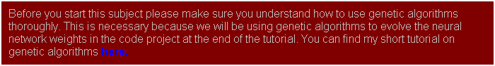

Introduction
I have been interested in artificial intelligence and artificial life for years and I read most of the popular books printed on the subject. I developed a grasp of most of the topics yet neural networks always seemed to elude me. Sure, I could explain their architecture but as to how they actually worked and how they were implemented… well that was a complete mystery to me, as much magic as science. I bought several books on the subject but every single one attacked the subject from a very mathematical and academic viewpoint and very few even gave any practical uses or examples. So for a long long time I scratched my head and hoped that one day I would be able to understand enough to experiment with them myself.
That day arrived some time later when - sat in a tent in the highlands of Scotland reading a book - I had a sudden blast of insight. It was one of those fantastic “eureka” moments and although Scotland is a beautiful place I couldn’t wait to get to a computer so I could try out what I’d just learnt. To my surprise the first neural net I programmed worked perfectly and I haven’t looked back since. I still have a great deal to learn, neural nets are a huge subject, but I hope I can share enough knowledge and enthusiasm to get you started on your own little projects. In many ways the fields of AI and A-Life are very exciting to work in. I think of these subjects as the explorers of old must have looked at all those vast empty spaces on the maps. There is so much to learn and discover.

I’ll start off by describing what a neural net actually is and what it’s architecture is, then I’ll do a little theory on how we get it to perform for us but I’ll try to use as little maths as possible. (Having some understanding of mathematics is impossible to avoid however and the deeper you get into this topic the more mathematics you are going to have to learn). Finally, we’ll get to the fun bit. I’ll come up with a little project I will program and take you through one step at a time. It will be in this last phase of the tutorial where I hope you get the same “eureka” feeling for neural nets as I did back in rainy old Scotland. Until then just sit back, absorb and be patient.
The C++ source code for the tutorial and a pre-compiled executable can be found here.
Update: A reader, Sam Corder, has converted the code into VB NET. You can download his source and executable here.
Update: A reader, Chris Reitzel, has converted the code into DELPHI. You can download his source and executable here.